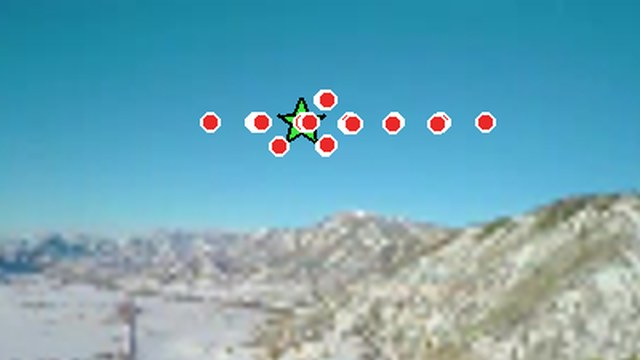
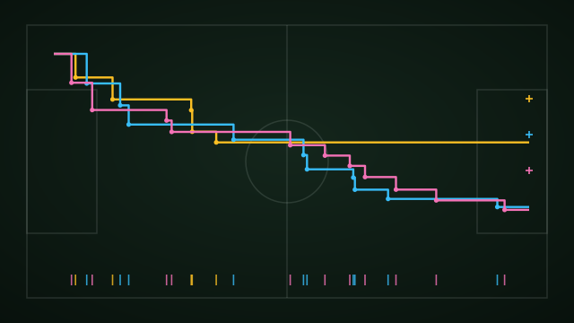
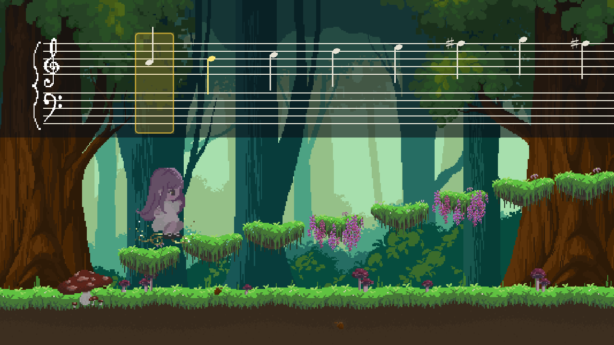
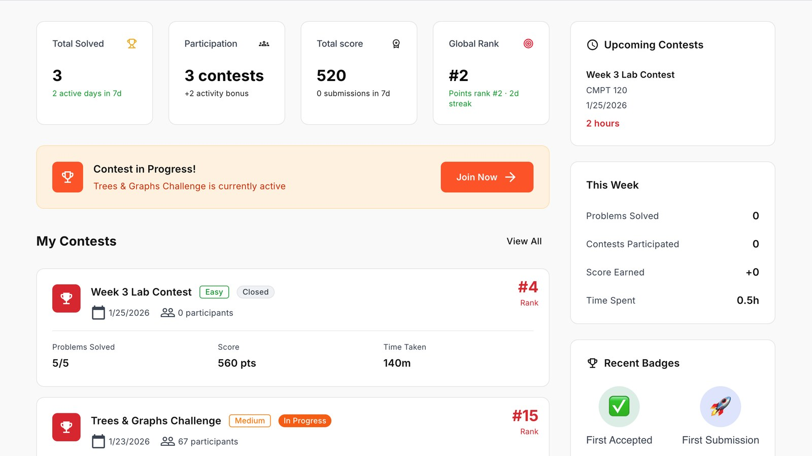
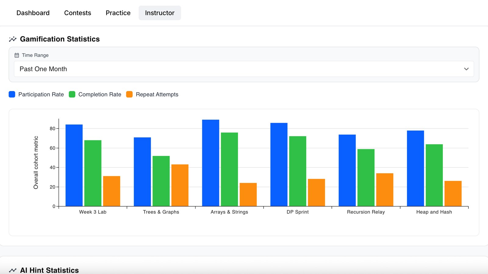

Simon Fraser University西蒙菲莎大学（Simon Fraser University）
Sep 2024 – Apr 2027 (expected)2023.09 – 2027.04B.Sc., Joint Major in Mathematics and Computing Science · GPA 3.82 / 4.33 · Dean's Honour Roll
理学学士，数学与计算机科学联合主修 · GPA 3.82 · 院长荣誉表彰
I'm a final-year undergraduate in the Mathematics and Computing Science joint major at Simon Fraser University. I work on 3D computer vision with Ke Li in the GrUVi Lab, where my research focuses on Gaussian splatting: making 3D scene representations more compact and more semantically structured.
Beyond 3D vision, I have used survival analysis to model the timing of soccer events as a USRA student with X. Joan Hu and K. Ken Peng, and helped build a music-theory game played on a piano in the MAGPIE group led by Caroline Colijn. I also like building software, such as the dashboards and analytics for SFU's competitive programming platform.
I'm applying to graduate programs starting in Fall 2027.
我是西蒙菲莎大学（Simon Fraser University）数学与计算机科学联合主修的应届本科生，在加拿大排名第一的计算机视觉实验室 GrUVi Lab 担任 AI 模型研究员，导师 Ke Li 教授，研究 3D 重建。
此外，我获得加拿大自然科学与工程研究理事会（NSERC）2026年国家级本科生研究奖，与 X. Joan Hu 教授用多层脆弱模型和 MCEM 算法为事件流建模与仿真。我曾经的工作包括 Agent 开发工程师和大模型应用开发工程师。
TL;DRObject-separable 3D scenes from textured 2D Gaussians, with clean object boundaries构建物体级可分离、边界干净的 3D 场景
Semantic segmentation with textured 2D Gaussian splatting, aiming for clean object boundaries. I also built a web viewer for inspecting individual Gaussians and their texture maps. More details once the paper is out.
我们构建物体级可分离的高质量 3D 场景表示，为机器人抓取与交互提供精确的几何。核心是一张可学习的逐纹素 label map，能在单个高斯内部学出物体边界；再由 label 引导的自适应切分机制，在训练中把跨越边界的高斯沿边界切开，可以直接接入现有 2DGS 生态。这样彻底清除了跨边界高斯，Chamfer Distance 降至基线的 1/412，mIoU 提高 7.1%。我还开发了一个交互式 3D 可视化工具，可以逐个高斯查看纹理图与渲染结果、提取物体、快速定位边界。

TL;DRChoose each sparse Gaussian's neighbours by feature similarity, not distance按特征相似度而非几何距离，为稀疏高斯挑选邻居
Feed-forward 3D Gaussian splatting from two views, exploring whether semantic features can pick better neighbours for sparse Gaussians. I re-implemented SparseSplat, whose code is unreleased, on the DepthSplat codebase and replaced its geometric neighbour search with cosine-similarity KNN in feature space, so each Gaussian draws context from neighbours on its own surface.
前馈 3DGS 往往生成大量冗余的高斯图元。我们基于冻结的 VGGT 骨干网络，从稀疏的双视图输入中提取具备几何感知的特征图，用一组数量随输入视图动态变化的 Token 通过交叉注意力进行查询；再在非像素对齐的特征空间里按余弦相似度做 KNN，合并相似的高斯图元。在 PSNR 保持基线水平的同时，高斯图元数量减少了 88%。

TL;DRMulti-level frailty models for soccer event streams, fitted about 600× faster用多层脆弱模型为事件流建模，拟合提速 600 倍用于仿真
Corner kicks modelled as right-censored event times with game- and team-level frailty. Building on the group's single-level model (Isaacs et al., 2026), I unified the no-, single- and multi-level frailty models in one Monte Carlo EM estimator and rewrote it in Rcpp/RcppParallel, cutting a single fit from about 8 hours to about a minute.
我们在生存分析框架下，把比赛事件建模为右截尾的事件历史数据，并引入隐脆弱变量构建多层模型，放松了传统的独立性假设。推断上，我设计了定制的蒙特卡洛期望最大化（MCEM）算法做极大似然估计，并用 Rcpp 重写计算瓶颈，速度提升 600 倍（耗时减少 99.83%）。基于这个模型可以模拟完整比赛，研究成果已封装为数据包开源，已被多个课题组后续研究采用。

TL;DRA platformer you play entirely on a piano一款全程用钢琴操控的平台跳跃游戏
A pixel-art platformer played on a piano: chords launch jumps and scales build staircases. I built the real-time note-judgement engine and the browser version, and used profiling to raise its frame rate from 18 to 60 FPS. The team's 12 levels step through all 24 major and minor keys.
一款全程用钢琴操控的音乐游戏：统一了桌面 MIDI、Web MIDI 和键盘三种输入，关卡地形由乐理结构自动生成。我构建了感知、规划、执行闭环的自动演奏 Agent，通关率 100%；还主导了多世界扩展架构，把关卡内容拆成数据驱动的配置，支持分支路线、Boss 关路由和存档进度。


TL;DRCompetitive programming platform with LLM judging and live results带 LLM 判题与实时结果推送的编程竞赛平台
A competitive programming platform for SFU with contests and Gemini-based AI judging. I built the role-based dashboards for students, instructors and admins, plus an instructor analytics page that compares contests, groups and students and exports to CSV/JSON/PDF.
为 ICPC 竞赛队开发的编程竞赛平台，覆盖日常练习、竞赛组织、AI 判题和数据分析。系统基于 Next.js、React、TypeScript、tRPC 和 PostgreSQL，按角色提供不同功能；我们接入 Gemini API，实现了异步提交处理、持久化判题记录，以及通过 SSE 实时推送结果。
TL;DRSizing solar arrays for Xantrex charge controllers为 Xantrex 充电控制器配置光伏阵列
A web calculator that helps Xantrex engineers size solar arrays for their charge controllers: from single-panel specs it computes total power, open-circuit voltage and maximum charge current. I built the user-account features (login, logout and account deletion, with unit tests).
一个网页计算器，帮助 Xantrex 工程师为其充电控制器配置光伏阵列：根据单块太阳能板的参数算出总功率、开路电压和最大充电电流。我负责用户账户功能（登录、登出和注销账户，并编写单元测试）。
B.Sc., Joint Major in Mathematics and Computing Science · GPA 3.82 / 4.33 · Dean's Honour Roll
理学学士，数学与计算机科学联合主修 · GPA 3.82 · 院长荣誉表彰